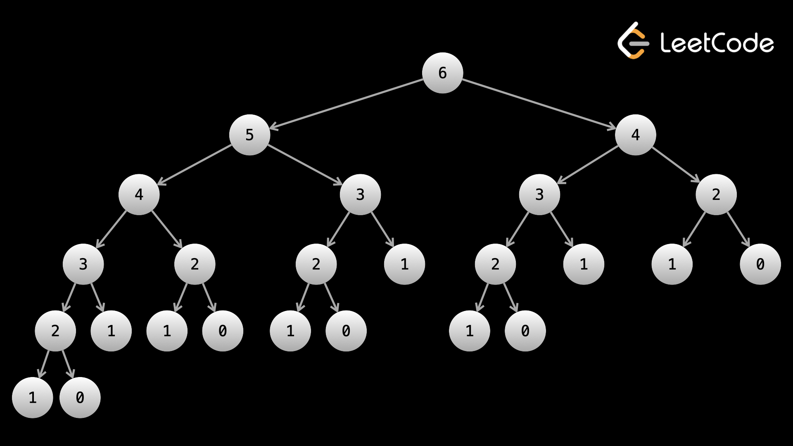

Динамическое программирование (ДП) — это метод решения проблем. Обычно проблемы, в которых вы используете
DP, могут быть решены только с помощью DP (за разумную временную сложность). Для многих людей ДП является
темой, которой больше всего боятся. Честно говоря, вокруг DP существует большая стигма. Вероятно, это
комбинация:
1. Если не знать ДП, то решить задачу ДП практически невозможно, даже если она простая.
2. ДП не так часто встречается на собеседованиях — некоторые компании даже запрещают его, а это значит, что
у людей меньше стимула изучать его.
Короче говоря, динамическое программирование — это просто оптимизированная рекурсия. Допустим, у вас есть некая рекурсивная функция, которая возвращает ответ на исходную задачу, обрабатывая все, что вы вызываете в функции, в качестве входных данных. Мы видели эту идею в разделе дерева. Например, мы часто определяли функцию dfs, которая брала node и возвращала ответ на исходную задачу, как если бы входными данными было поддерево с корнем в node.
Идея динамического программирования та же самая. Мы определяем некоторую рекурсивную функцию, обычно называемую dp, которая возвращает ответ на исходную задачу, как если бы аргументы, которые вы ей передали, были входными данными.
Аргументы, которые принимает рекурсивная функция, представляют состояние. Когда мы рассматривали проблемы с деревьями, мы никогда не посещали узел в нашей DFS более одного раза, а это означает, что состояние никогда не повторялось. Отличие DP в том, что состояния могут повторяться, обычно экспоненциальное число раз. Чтобы избежать повторения вычислений, мы используем так называемую мемоизацию. Когда мы находим ответ (возвращаемое значение) для данного состояния, мы кэшируем это значение (обычно в хэш-карте). Тогда в будущем, если мы когда-нибудь снова увидим то же состояние, мы сможем просто обратиться к кэшированному значению без необходимости его повторного расчета.
Подобно тому, как мы рассматривали графики, если известен диапазон состояний, то в некоторых языках может быть гораздо лучше использовать массив для кэширования значений вместо использования хеширования.
Давайте посмотрим на числа Фибоначчи в качестве примера. 0й номер Фибоначчи равен 0, следующий - 1, и тогда каждое последующее число является суммой двух предыдущих. Формула для nого числа Фибоначчи: Fn = Fn-1 + Fn-2. Мы можем написать функцию, которая находит nое число Фибоначчи:
Формула Fn = Fn-1 + Fn-2 называется рекуррентным соотношением.
if n == 0:
return 0
if n == 1:
return 1
return fibonacci(n - 1) + fibonacci(n - 2)
Этот алгоритм имеет временную сложность О(2n). Это связано с тем, что каждый вызов fibonacci создает еще 2 вызова fibonacci. Вот дерево рекурсии для fibonacci(6):

Как видите, повторяющихся вычислений много — например, f(4) вычисляется дважды, f(3) вычисляется 3 раза, а f(2) вычисляется 5 раз. При таком размере это не кажется чем-то большим. Однако с ростом n количество повторных вычислений растет экспоненциально. Если бы мы хотели вычислить f(7), то всё это дерево было бы лишь одной стороной корня.
Чтобы избежать повторения вычислений, мы можем запомнить результаты вызовов наших функций. Давайте воспользуемся хеш-картой для хранения результатов и проверим хеш-карту перед выполнением каких-либо рекурсивных вызовов.
if n == 0:
return 0
if n == 1:
return 1
if n in memo:
return memo[n]
memo[n] = fibonacci(n - 1) + fibonacci(n - 2)
return memo[n]
Это улучшает нашу временную сложность до O(n) – что, конечно, очень быстро по сравнению с О(2n). Первый подход — это просто базовая рекурсия: благодаря запоминанию результатов во избежание дублирования вычислений он становится динамическим программированием.
Этот метод использования рекурсии и мемоизации также известен как динамическое программирование «сверху вниз». Она названа так потому, что мы начинаем сверху (исходная задача) и двигаемся вниз к базовым случаям. Например, мы ищем nth Число Фибоначчи, поэтому мы начали с вызова fibonacci(n). Мы двигаемся вниз с помощью рекурсии, пока не достигнем базовых случаев (F(0) и F(1)).
Другой способ решения задачи динамического программирования — использование алгоритма «снизу вверх». При восходящем подходе мы начинаем снизу (базовые случаи) и продвигаемся к более крупным проблемам. Это делается итеративно и также известно как табуляция. Вот восходящая версия Фибоначчи:
arr = [0] * (n + 1)
# base case - the second Fibonacci number is 1
arr[1] = 1
for i in range(2, n + 1):
arr[i] = arr[i - 1] + arr[i - 2]
return arr[n]
Сверху вниз и снизу вверх относятся только к тому, как вы решите реализовать свой алгоритм. Между этими двумя подходами нет принципиальной разницы. Любая реализация сверху вниз может быть реализована снизу вверх и наоборот. Алгоритм DP определяют базовые случаи и рекуррентное соотношение (о которых мы поговорим подробнее в следующей статье).
У обоих есть плюсы и минусы, но основными аргументами в пользу каждого являются:
Проблемы, которые следует решать с помощью DP, обычно имеют две основные характеристики:
Обратите внимание на первую характеристику: не все проблемы, представленные в этих форматах, предназначены для решения с помощью DP, и не все проблемы DP находятся в одном из этих форматов. Однако в целом эти характеристики сохраняются очень хорошо.
Чтобы прояснить вторую характеристику: давайте посмотрим на классическую задачу DP «Грабитель дома».
Вы планируете грабить дома на улице. В ith доме есть nums[i] денег. Если вы ограбите
два дома
рядом друг с другом, сработает система сигнализации и предупредит полицию. Какую максимальную сумму денег вы
можете украсть, не предупредив полицию?
Вторая характеристика обычно является тем, что отличает жадность и DP. Идея жадности заключается в том, что местные решения не влияют на другие решения. Допустим, у нас есть nums = [2,7,9,3,1], и мы хотим проявить жадность. Итерируя по массиву, первое решение — выбрать 2 или 7, поскольку мы не можем иметь оба. Если бы мы были жадными, мы бы взяли 7. Однако сейчас мы больше не можем брать 9. Фактически, оптимальный ответ предполагает взятие 2, 9, 1. Как видите, жадность в наших решениях повлияла на будущие решения, которые привели нас к неправильному ответу.
Мы кратко говорили о состоянии в предыдущих главах. Состояние относится к набору переменных, которые могут полностью описать сценарий. Когда мы рассматривали проблемы с деревьями, каждый рекурсивный вызов dfs принимал в качестве аргументов node и, возможно, некоторые другие переменные. Эти аргументы представляют состояние. В следующей статье мы увидим, что первым шагом к созданию алгоритмов DP является принятие решения о том, какие переменные состояния необходимы.
Когда мы говорили о деревьях, мы говорили, что каждый вызов функции dfs будет возвращать ответ на исходную задачу, как если бы состояние, переданное при вызове, было входными данными. С ДП то же самое. Вызов dp(state) должен возвращать ответ на исходную задачу, как если бы state было входными данными.
Ниже приведены общие переменные состояния, о которых вам следует подумать:
Количество используемых переменных состояния является размерностью алгоритма. Например, если алгоритм использует только одну переменную, например i, то он является одномерным. Если проблема имеет несколько переменных состояния, она многомерна. Для некоторых задач может потребоваться до пяти измерений.
Анализ сложности алгоритмов DP очень прост. Как и в случае с деревьями/графами, мы вычисляем каждое состояние только один раз. Поэтому, если есть N возможных состояний, и работа, совершаемая в каждом состоянии, равна F, тогда ваша временная сложность будет О(N⋅F). Обратите внимание, что это тот же самый аргумент, который мы использовали в задачах о деревьях и графах.
Пространственная сложность будет O(N) — если мы работаем сверху вниз, наша хэш-карта будет хранить все состояния в конце. Если мы работаем снизу вверх, размер массива, который мы используем для табуляции, будет того же размера, что и количество штатов.
Во многих задачах пространственную сложность можно улучшить при реализации восходящего, а не нисходящего подхода. Мы увидим это в оставшейся части главы.
Чтобы подсчитать количество состояний N, посмотрите на каждую из ваших переменных состояния, вычислите диапазон значений, которые они могут принимать, а затем перемножьте их. Допустим, у нас возникла проблема, требующая трех переменных состояния: i, k и holding. i перебирает входные числа nums, k задано в задаче, а holding является логическим значением. Тогда количество состояний равно nums.length * k * 2. Если вычисление каждого состояния O(1), то временная и пространственная сложность равна O(n⋅k), где n = nums.length.